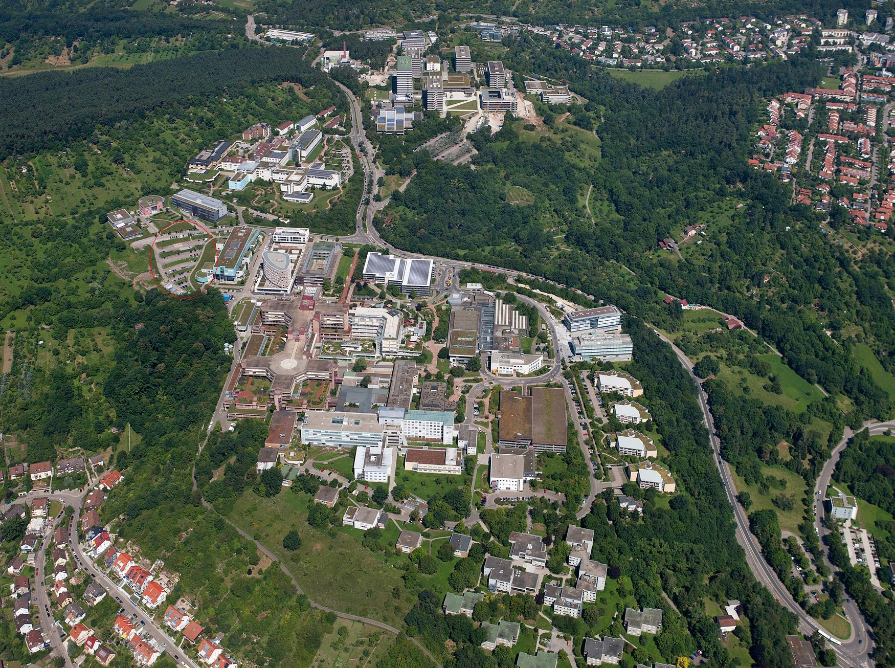

The "IQF-Wind" project is actively involved in a joint project funded by the state Baden-Wüttemberg. This project is running in the University of Tübingen, a university town located south west of Germany. The project aims to look at the potential for renewable energies in University and Hospital buildings of Tübingen. Among the different kind of renewable energy, the wind energy is studied in order to evaluate the potential from small wind turbine and identify optimal locations for turbine installation. This investigation combines a full-scale experiment and a numerical study using computational fluid dynamic CFD.
Aerial image of Schnarrenberg